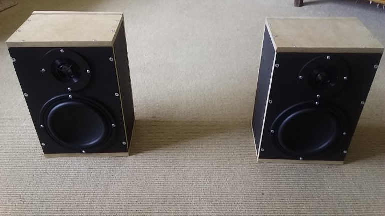
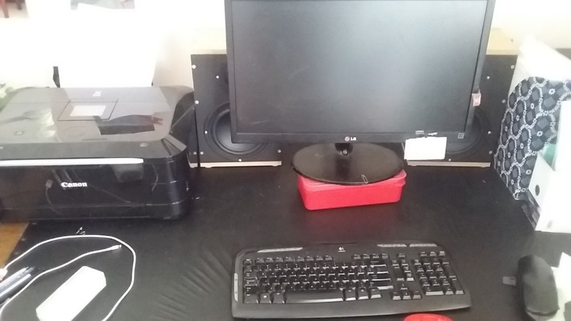
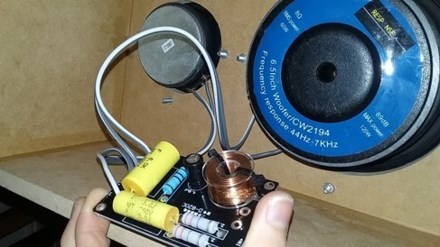
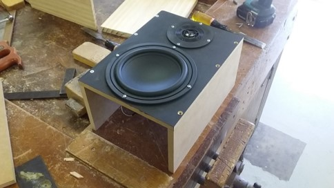
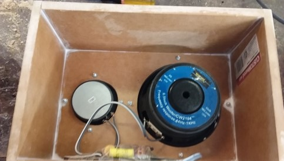
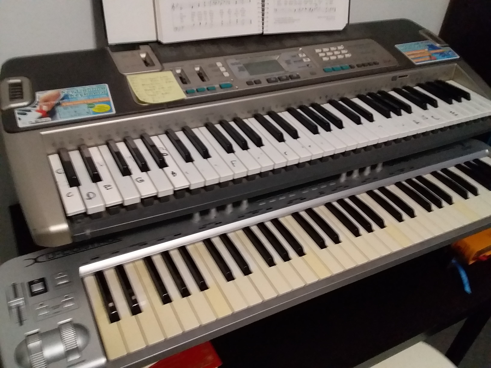

This is the journey from constructing simple audio circuits to building an electronic MIDI organ console.
In high school, I built a set of stereo bookshelf speakers as my end of year engineering project:

Completed speakers on their own

Speakers set up in environment

Crossover circuitry for the speaker cabinet

Mounting the drivers in the front plate

Finishing and sealing the assembled cabinet
Attaching the wire mount and back plate
This was my first major step into the world of audio electronics. About a year later, I began learning about
synthesizers and constructing the basic circuits involved with them. After deciding to build one fully, I
had the problem of deciding which kind I wanted to build, as there were several types.
When I completed a design draft for the synthesizer of the complexity and versatility I wanted, I found that
it would cost hundreds of dollars to construct. Considering the limited sound palette of any one synthesizer,
I didn't feel it was worth the financial and time investment. Nevertheless, I decided to start step by step,
doing everything in stages so if it becomes too expensive I can settle for a simpler instrument.

Top: The first step in the process; a keyboard, Bottom: the MIDI keyboard I bought later on
I bought a old casio keyboard with missing keys from my music store to use as the base for the project and to
control the electronics with. In the process of working with it, I managed to get the original keyboard
electronics working again. The keyboard seemed to have a wide sound palette so I decided to play it for a while
instead of stripping out the electronics. Working with the acoustic and orchestral emulations on the keyboard
made me prefer them over the synthesized sounds; especially the organ. Over time, I became more partial to
building something for samples, rather than a synthesizer, bringing to life the idea to build a virtual organ.
Concept
Instead of a synthesizer, I was going to build a virtual organ console, which meant lots of different samples
rather than creating my sounds. I wanted to use Ableton Live Lite which came with my launchpads as the main
software. It had the capabilities for both samplers and synthesizers, however, once the 100+ samples and all the
organ features were setup, my computer couldn't handle the load without distorting the final audio and having high
latency.
This should be in manufacturing or summit
Since Ableton was not going to work as my primary software I investigated virtual organ software packages like
Hauptwerk. Although it could easily handle the samples, it required a
payment plan which I was not willing to subscribe to, and furthermore, I had no guarantee that my launchpads or
other console components I had built would work with it. I continued to search for alternatives, when I discovered
jOrgan. jOrgan is a MIDI processor, it allows you to use any samples or soundfonts you like to create
a virtual organ console. I was able to program my launchpads into it and connect all my arduino MIDI devices.
The parts of an organ console I needed were two keyboards (or manuals), some expression (swell) pedals,
a pedal-board, stop and piston buttons, a stool, a music stand and a sound system.
Pedalboard
After searching online; I realised that if I wanted a pedalboard and for less than $500 AUD, I would have to build my own.
I went through several plans and designs but many were either weren't clear enough to build from or were beyond
my woodworking skills. I found inspiration for a simple and cheap design from this link.
Design
The pedalboard was too wide so I widened the desk then shortened the pedalboard and it fit.